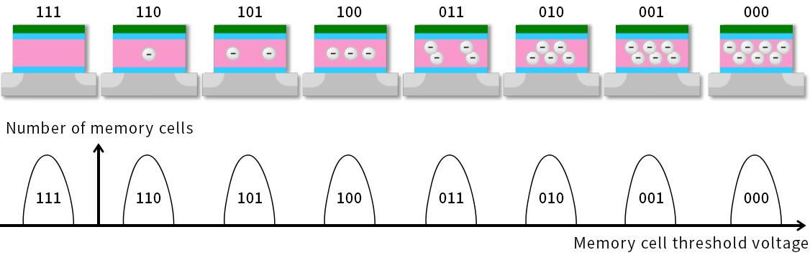
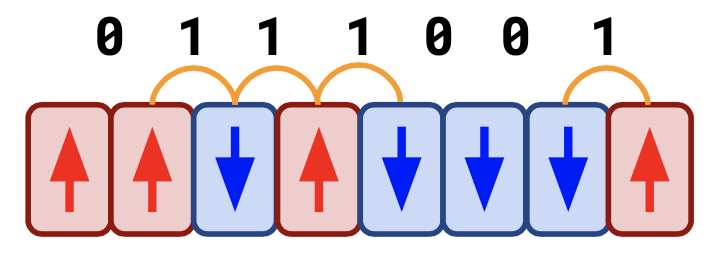
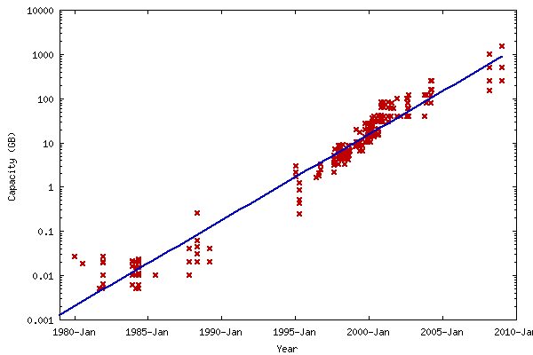
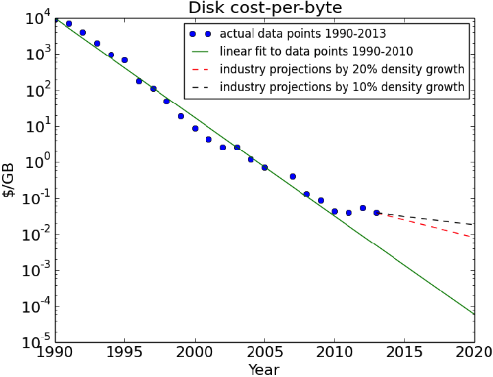
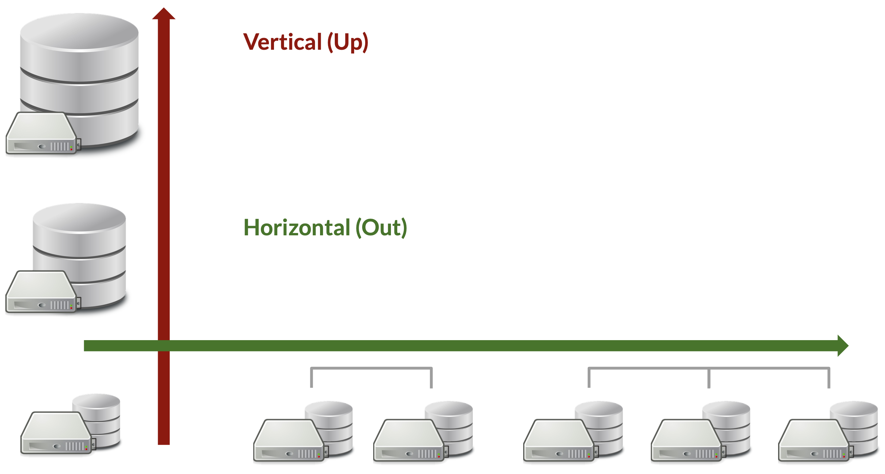

2 Storage
Each storage unit plays a different role, although the purpose was always to keep the data received as input in memory:
- The DAQ writes to a memory at very high frequencies, performing several write cycles in a short time; however, this data will not remain in that memory unit for long — it will be processed and sent elsewhere, freeing up space for new information from the data acquisition system.
- The processed data are distributed in two different units: in both cases the writing takes place in much wider time frames, and at the same time the amount of memory used grows considerably.
- The same processed data are copied to a further memory, which must therefore be of huge dimensions but from which not many read cycles are expected.
We therefore notice different needs regarding the memory units: a decreasing number of read and write operations corresponds to an increasing amount of available space. These different needs translate into different technologies suitable to satisfy them.
These technologies are distinguished by several aspects, all related to I/O (input/output) requests — read, write, update and delete:
- Latency: time taken to perform a single I/O
- Frequency: number of I/Os performed per second (IOPS, I/O per second)
- Block size: size in bytes of a single I/O
- Throughput: product of block size and frequency, i.e. the amount of bits transferred in a certain time interval, conventionally measured in \(\text{MB/s}\)
Bandwidth is the theoretical maximum capacity of a storage channel — the ideal rate under perfect conditions. Throughput is the actually measured transfer rate in practice, which is always lower due to overhead, contention, and access patterns. Benchmarking tools measure throughput; vendor datasheets typically quote bandwidth.
Given a storage device with the following characteristics: - Block size: 4 kB - Average access latency: 11.1 ms
\[\text{IOPS} = \frac{1}{0.0111\,\text{s}} \approx 90\,\text{ops/s}\]
\[\text{Throughput} = 90 \times 4\,\text{kB} \approx 360\,\text{kB/s}\]
This is typical of a spinning HDD under random-access workloads. For large sequential reads the same HDD may achieve 100–200 MB/s by amortising seek and rotation latency across large blocks.
The two metrics are linked by a simple identity:
\[\text{Throughput} = \text{IOPS} \times \text{Block size}\]
For example, a device sustaining 1 000 IOPS with 128 kB blocks delivers:
\[1{,}000 \times 128\,\text{kB} = 128\,\text{MB/s throughput}\]
This formula highlights a fundamental trade-off in storage tuning:
- Maximising throughput favours large sequential I/Os (big block size, fewer individual operations) — typical of streaming workloads such as video ingest or bulk data analysis.
- Maximising IOPS favours many small random I/Os (small block size, high operation count) — typical of database transaction workloads or metadata-heavy file systems.
Optimising for one goal generally comes at the expense of the other: a device configured for peak IOPS (small blocks, high parallelism) will show lower throughput than the same device streaming large sequential blocks, and vice versa.
2.1 Memory Devices
The various devices are listed from the one with the lowest latency to the one with the highest latency.
2.1.1 DRAM (Dynamic Random Access Memory)
It stores data bits in NAND cells, composed of a transistor connected to the bus line coupled with a capacitor.
The term RAM indicates that it is possible to access data in any position at the same speed; the term dynamic specifies that the data do not remain in memory persistently — when the power to the device is interrupted all the data are lost.
Its main flaw lies precisely in this characteristic, which makes it a temporary storage; at the same time, its main advantage is the speed in executing I/O operations, with a latency of \(\sim 0.1\ \mu s\). DRAMs are used for processes that require a very high writing frequency.
2.1.2 NVM (Non-Volatile Memory) / Persistent Memory
An alternative to DRAM that has a similar latency (\(\sim 1\ \mu s\)) but keeps the data saved even when the device’s power is cut off. These qualities require a very high cost: for this reason, devices of this type are not used in standard applications, but in specific projects that require devices with these characteristics.
Unlike DRAM, NVM is byte-addressable and non-volatile — data survives a power loss just as it does on an SSD, while still being accessible at near-DRAM speeds. A well-known commercial example is Intel Optane (based on 3D XPoint technology), which sits between DRAM and NVMe SSD in the storage hierarchy:
| Property | DRAM | NVM / Persistent Memory | NVMe SSD |
|---|---|---|---|
| Latency | ~100 ns | ~1 µs | ~100 µs |
| Persistence | Volatile | Non-volatile | Non-volatile |
| Byte-addressable | Yes | Yes | No |
| Cost/GB | Very high | High | Medium–high |
Typical use cases include: - High-speed persistent cache: absorbing bursty writes before flushing to slower storage, without the risk of data loss on power failure. - In-memory databases: replacing DRAM as main memory in latency-sensitive applications (e.g., financial trading, real-time analytics) where durability is also required.
NVM fills the gap between volatile DRAM and durable SSDs. It is faster than SSD, slower than DRAM, and — unlike DRAM — survives a power loss. This makes it attractive wherever both low latency and persistence are required simultaneously.
2.1.3 SSD (Solid State Drives)
Due to their depreciation over time, SSDs have become widespread even for the general public, being included in common personal computers.
The novelty lies in the way the information is stored: no longer in NAND cells but in multi-level charge traps — capacitors that distinguish between multiple charge levels. In most devices these levels are eight, thus encoding a total of three bits of information.

This technology, called TLC (Triple-level cell), allows to expand the storage density, resulting in much more compact devices with the same memory. On the other hand, it limits the writing capacity: every time it is necessary to write a new piece of information, the entire cell must be erased first. These are therefore devices with a high reading frequency (\(\sim 10\ \mu s\)) but with a considerably lower writing frequency (\(\sim 100\ \mu s\)).
Another limitation lies in the inevitable process of hysteresis that the various cells undergo in the writing cycles: each cycle corresponds to a small residual charge that no longer allows correct operation beyond a certain accumulation. Every SSD has an “expiration date” foreseen from the beginning, the closer the more frequent the use.
2.1.4 HDD (Hard Disk Drives)
They are the most widespread memory devices today, being an excellent compromise in terms of cost relative to their performance.
An HDD is formed by disks magnetized on both sides whose domains are distributed along concentric circles: the individual magnetic domains are called tracks, which belong to sectors in turn distributed on the side of a disk, called a platter. The bits are not associated each with a single track but with two consecutive tracks — bit \(0\) corresponds to two tracks with the same polarization and bit \(1\) to two tracks with opposite polarization.

Data reading does not take place by track but by sector, which usually contain from \(0.5\) to \(4\ \text{kB}\), so even writing to disk is broken down according to this block size.
Reading and writing takes place through mechanical arms, which read the various sectors as a stylus does with a turntable. The limits in reading and writing speed depend on the mechanical nature of the device. The latency (\(\sim \text{ms}\)) can be divided into two contributions:
- Seek time: time taken to align the arm to the track
- Rotation delay: time taken by the disk to rotate by aligning itself with the sector
2.1.5 Magnetic Tapes
Magnetic tapes use the same technology as VHS cassettes: magnetic domains arranged one after the other on a tape that can be wound into a compact form. They are designed for data that will not be retrieved except rarely and after a long time. All large scientific projects have a copy of all their data in the form of tapes — CERN currently stores almost \(1\ \text{EB}\) (\(10^3\ \text{PB}\)) in tape form.
Reading takes place through robotic arms that pick up the requested tape and carry it to the reader. The latency order of magnitude is \(\sim 100\ s\), with a wide range due to high randomness.
The reading itself is very fast — the high latency is exclusively attributable to the mechanical retrieval process described above. The main advantages of this format are its low production cost and its robustness: even in extreme cases such as flooding, the data would remain intact.
2.2 Kryder’s Law
A factor to be taken into account for the long-term storage of data is the constant development of technologies in this sector. Analogous to Moore’s Law for transistors, Kryder’s Law (Mark Kryder, 2005) states that storage density doubles roughly every 13 months — implying that the cost per GB halves on a similar timescale. A side effect is the constant depreciation over time of the same amount of memory.


Kryder’s Law: capacity growth and memory depreciation over time
The original 2005 prediction has not held for well over a decade. Areal density improvements in HDDs — the primary driver of the law — stalled around 2010 as magnetic bit cells approached fundamental physical limits. Progress since then has relied on incremental engineering advances (heat-assisted magnetic recording, shingled magnetic recording) rather than the exponential density scaling Kryder envisioned.
Practical consequences:
- The cost-per-GB gap between HDD and flash/SSD has narrowed far more slowly than Kryder’s Law predicted.
- Magnetic tape remains cost-competitive for cold storage at scale precisely because HDD prices have not fallen as quickly as expected — tape continues to offer the lowest cost per GB for write-once archival workloads.
- Long-term capacity planning for large experiments cannot safely assume exponential cost reduction; actual procurement costs should be benchmarked against current market prices.
This law, first proposed in 2005 on an empirical basis, has not been strictly valid for about two decades. Nevertheless, its intrinsic meaning remains: technologies in this field evolve over time, and it is important to take this into account in the context of datasets that grow over the years.
2.3 Scalability
How do we manage a constantly growing dataset? How will performance change as a result of the increase in memory? This problem is called scalability, and there are two different approaches:
- Vertical scalability: the increase in memory is performed by replacing the current resources with more modern and advanced resources.
- Horizontal scalability: the increase in memory is performed by connecting new resources in a chain, forming a distributed system.
| Vertical | Horizontal | |
|---|---|---|
| ✅ | No real change in the way the user accesses the resources | Possible to increase space consistently with a relatively low price |
| ✅ | If performance is satisfactory, it can only improve | Scalability is facilitated at the hardware level |
| ❌ | Expensive | Relies on the network connection — bandwidth can be limiting |
| ❌ | Limit to the amount of memory available for a single device | Laborious to access resources distributed on different local systems |
| ❌ | Operations must be interrupted during the update and data transfer |

2.4 Storage Media at a Glance
| Medium | Typical Latency | Typical Throughput | Capacity | Cost/GB | Persistence |
|---|---|---|---|---|---|
| DRAM | ~100 ns | ~50 GB/s | GBs | Very high | Volatile |
| NVM / Persistent Memory | ~1 µs | ~10–40 GB/s | GBs–TBs | High | Non-volatile |
| SSD (NVMe) | ~100 µs | ~3–7 GB/s | TBs | Medium–high | Non-volatile |
| SSD (SATA) | ~500 µs | ~500 MB/s | TBs | Medium | Non-volatile |
| HDD | ~10 ms | ~100–200 MB/s | TBs–PBs | Low | Non-volatile |
| Magnetic Tape | ~100 s | ~250–400 MB/s (sequential) | PBs | Very low | Non-volatile |
The right storage tier depends on the access pattern: latency-sensitive workloads require DRAM or NVMe; archival workloads with infrequent access are well served by tape.
2.5 Measuring Storage Performance
The dd command-line utility is a standard tool for benchmarking raw storage throughput on Linux systems.
Write test (write 1 GB of zeros to a file, bypassing the OS page cache with oflag=direct):
dd if=/dev/zero of=/tmp/test_write bs=1M count=1024 oflag=directRead test (read the file back, discarding output):
dd if=/tmp/test_write of=/dev/null bs=1M iflag=directThe dd output reports the elapsed time and measured throughput.
/dev/zero and /dev/null?
In the write test, the input file is /dev/zero — a special Linux device file that produces an unlimited stream of null bytes (all zeros) without reading any real storage. This ensures the benchmark measures write performance only, not how fast the source medium can be read.
In the read test, the output file is /dev/null — a special device file that silently discards everything written to it. This ensures the benchmark measures read performance only, not how fast the destination medium can be written.
Both devices are effectively instantaneous from the kernel’s perspective, so the elapsed time is dominated by the storage under test.
2.5.1 fio — Production-Grade I/O Benchmarking
dd is useful for a quick sequential-throughput estimate, but it cannot measure IOPS, random access patterns, queue depth effects, or latency distributions. The industry-standard tool for comprehensive storage characterisation is fio (Flexible I/O Tester).
Key capabilities of fio:
- Configurable block sizes (e.g., 4 kB for IOPS-focused tests, 1 MB for throughput tests)
- Sequential and random read/write patterns (
--rw=read,--rw=randread,--rw=randrw, …) - Adjustable I/O queue depth (
--iodepth) to stress the device’s internal parallelism - Multi-job concurrency (
--numjobs) to simulate real-world workloads - Detailed output: IOPS, bandwidth, and latency percentiles (p50, p99, p99.9)
Minimal fio example — random 4 kB reads (typical IOPS benchmark):
fio --name=randread --ioengine=libaio --rw=randread --bs=4k --numjobs=4 \
--size=1G --runtime=30 --group_reportingThis runs four parallel jobs, each performing random 4 kB reads over a 1 GB working set for 30 seconds, and reports aggregated IOPS, throughput, and latency.
2.6 Exercises
In physics, a large portion of data is structured. What issues might arise in an evolving system (e.g., an experiment adding more sensing devices over time), and what alternative data management solutions could be implemented to address these challenges?
Solution. The main problem with structured data is that the schema is completelly fixed, so if you add more sensor that are measuring something that is not already in the schema, you will have to change the schema and update all previous records. Another problem might be the scalability of the system, the new sensors might produce a bigger amount of data than expected. The first problem has not an easy solution, but apart form updating the schem you can change to a semi-structured data format which is more flexible. The second problem can be solved if it was foreseen before making measurements, if the system was designed to scale up (updating the hardware) then the fix is just to update the hardware, if not, it means that it wasdesigned to scale horizontally, so the solution is to add more nodes to the system and distribute the data among them.
When scaling up a storage system, what types of issues are you likely to encounter? Discuss both technical and organisational challenges.
Solution. Depending on the type of scalability, the issues might be different. In vertical scalability, the main problem is that there is a limit to the amount of memory that can be added to a single device, so if the dataset grows too much, it might not be possible to scale up anymore. In horizontal scalability, the main problem is that the network connection can become a bottleneck, especially if the data needs to be accessed frequently and from multiple nodes. Organisational challenges include coordinating updates across multiple nodes, ensuring data consistency, and managing the increased complexity of a distributed system.
Explain the concept of storage throughput and highlight how it differs from bandwidth. Why is the measured throughput always lower than the theoretical bandwidth?
Solution. Storage throughput is the amount of data that can be transported (or used in I/O operations) per second. The bandwidth is the theoretical maximum of the throughput, which assumes optimal conditions for the device, and thats why is always bigger than the throughput
A storage device transfers 100 blocks of 4 kB in 9.5 ms. Compute the throughput (in MB/s) and the IOPS. Based on these values, identify the most likely type of storage device being used.
Solution. The throughput is: \[\frac{100\times4\times10^{-3}~[MB]}{9.5\times10^{-3}~[s]}=42.105~[MB/s]\] and the IOPS are: \[\frac{100}{9.5\times10^{-3}~[s]}=10526.31579~[IO/s^{-1}]\] In order to te determine the device we should compute the latency, which is:
\[IOPS^{-1}=\frac{1}{10526.31579}=95\times10^{-6}~[s]=95~[\mu s]\] Given that the latency is closer to the 100 \(\mu s\) we could say that the device is an SSD.
The following Unix dd command is used to benchmark a storage element:
dd if=/dev/zero of=./test bs=16M count=64 oflag=directThis command performs 64 consecutive writes of 16 MB blocks and measures the total elapsed time. If the overall time is measured at 0.436 seconds, what is the throughput of the storage element? From this throughput value, what kind of storage element is most likely being used?
Solution. The throughput is: \[\frac{64\times16~[MB]}{0.436~[s]}=2348.624~[MB/s]\approx 2.35~[GB/s]\] and the IOPS are: \[\frac{64}{0.436~[s]}=146.789~[IO/s].\] With 16 MB blocks \(1/\text{IOPS}=6.8\) ms is time-per-block, not a device latency suitable for classification. The relevant clue is the throughput: a sustained \(\sim 2.3\) GB/s on streaming writes is well above SATA SSD (\(\sim 500\) MB/s) and HDD (\(\sim 150\) MB/s), so the device is an NVMe SSD.
Under ideal conditions, a given HDD is capable of 85 IOPS. What is the latency of the device? What are the main physical sources of this latency in a mechanical hard drive?
Solution. The latency is:
\[IOPS^{-1}=\frac{1}{85}=11.764\times10^{-3}~[s]=11.764~[m s]\]
Which is very high compared with other devices, this high latency it’s due to 2 main factors:
* Seek time: Is the time the disk takes to align with the lector
* Rotation time: Is the time it takes the disk to rotate into the sector where the data livesGiven a storage device with the following characteristics: block size = 512 B, throughput = 3.2 GB/s. Calculate the IOPS and the latency of the device. Based on the obtained latency value, suggest what type of storage media (DRAM, NVMe SSD, SATA SSD, HDD, tape) is suitable.
Solution. With \(3.2~[GB/s] = 3.2\times 10^{9}~[B/s]\), the IOPS are throughput divided by block size:
\[\frac{3.2\times 10^{9}~[B/s]}{512~[B]}=6.25\times 10^{6}~[IOPS].\] Latency:
\[IOPS^{-1}=\frac{1}{6.25\times 10^{6}}=160\times 10^{-9}~[s]=160~[ns].\] Sub-microsecond random latency combined with multi-GB/s throughput is in the DRAM range — neither SATA SSD (\(\sim 100~\mu\)s) nor NVMe SSD (\(\sim 10~\mu\)s) can hit it.
How does the Mean Time To Failure (MTTF) of storage devices influence the overall reliability of large-scale data centres? What strategies can be adopted to mitigate the risk of data loss due to device failures?
Solution. The Mean Time To Failure (MTTF) measures what is the average time that a device will work before it can loss part or all of the data. It influences the reliability of large-scale data center because they need to ensure that the data loss is reduced to the minimum and the more devices you manage, the more devices will brake and will have to be raplaced. One solution can be implemented by schedueling replacement of the devices before the MTTF, other solution can be to implement a RAID system to ensure that if there is a malfunctioning device the data is not lost, then replace that device, in this approach the device will only be replaced after failure.
In 2013, the CERN Data Centre hosted approximately 52,000 tape cartridges and 17,000 HDD disks. Assuming a realistic MTTF of 150,000 hours for HDDs and 300,000 hours for tape cartridges, how many combined disks and tapes should be expected to fail every week?
Solution. For the tape cartridges (MTTF \(=300{,}000~[h]\)):
\[\frac{52{,}000\times 24~[h/day]\times 7~[day/week]}{300{,}000~[h]}\approx 29.1\text{ tapes per week.}\] For the HDDs (MTTF \(=150{,}000~[h]\)): \[\frac{17{,}000\times 24~[h/day]\times 7~[day/week]}{150{,}000~[h]}\approx 19.0\text{ disks per week.}\]
So on average \(\approx 48\) devices fail every week at the CERN Data Centre.